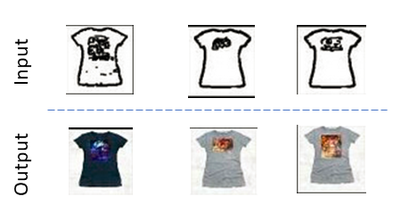

Experiments
In addition to the main goal to style transfer from tshirts to watches and vice versa, we also ran the experiments listed below.
Edges to Tshirts
Given edges-only images of tshirts, we train the model to generate coloured images of tshirts. The exact same model and parameters are used. For training data, we have domain A as edge images and domain B as images of tshirts. To get the domain A images, we first take our dataset of tshirt images and then run an edge detector on it to generate the edges. We then train the model with domain A images (edge images) and domain B images (tshirt images). T
The results of this experiment is accessible here. A snapshot of a few results is given below.
Observations and Limitations
We see that given the edge images, real looking images of tshirts are generated. Our dataset is limited, as most of the tshirt images are plain colour(grey or black) same design tshirts, varying only in the print on the tshirt.Edges to Watches
Following the same approach as described below, we also ran experiment with domain A as edge images of watches and domain B as images of watches. The results of this experiment is given here. A snapshot of a few results is given below.